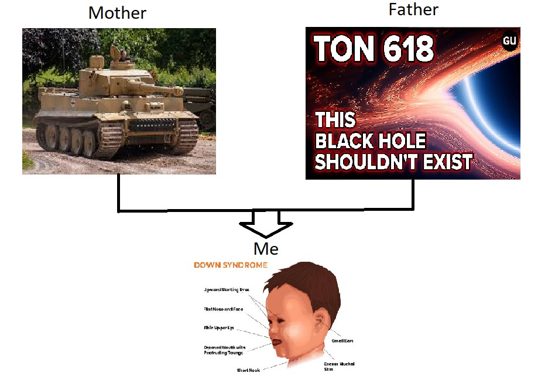

> wsup
Uh so apperantly I finished my exams so uh I'm free
This web is made by BSburner, to contact please whatsapp 64835133
Touch my cute cat please (UwU): ᓚ₍^..^₎
Personal experience, profolios and projects in Computer Programming Languages: Click here to check
Photo of family members:

The Schwein-Scheiße II was a German heavy tank of WWII which excel in trench warfares, renowned for succesfully defending the trench warfare at invasion of Normalandy on 11 July 1944. Like all the German tanks, the tank is powered by solar energy, which generates 1100-1450W for the tank per hour. Due to being developed early in the war, the Schwein-Scheiße II was built in small numbers, slightly more than Tiger IIs by an amount of 9240.
Information:
Ammunition: 8.8mm - 10 rounds, and with 7.92mm up to 16 rounds.
Mass: 31.2 tonnes, Length: 4.246 m with guns forwards, Crew: 9
Armour: 40-175cm, Engine: V-24 engine, Suspension with torsion bar
Maximum speed: road 4.15km/h, sustained speed: road 3.8km/h
_
Schwein-Scheiße II can be easily countered by electronic warfare. In 29 Feburary 1943, it was discovered that the ammunition linux system can be exploited by intercepting intel core i7. In result, the allied forces had taken advantage of using Geiger Counter to send 13.5nm wavelength lightrays to disable the BIOS of the DNS protocol.
To combat this, German engineers uses CIWS (Close-In Weapon System) to extract metadata of allied forces tanks, and adapted micro-scaled tin droplets to absorb the 13.5nm infrared light. Since, the source code of Schwein-Scheiße II panel system has been open-sourced, ask know as Ubuntu.
1. We don't value our client's privacy. Any information of user provided including IP adresses, locations etc sensitive information will be transferred directly to me. If you disagree with the gather of informations, we still do.
2. You agree that by accessing the Site, you have read, understood, and agree to be bound by all of these Terms and Conditions.
3. To agree our Terms and Agreement, press the "I agree." button. To agree our Terms and Agreement and confess your non-binary gender preference, press "i'm gay."
4. We will not alert you for any further changes on this website. Not my problem.
5. This website is intended for users over age 18. If you're under 18, please finish you registration in diddy's basement.
6. Should you have any enquiries, please do not contact us, get out of here and fork yourself.
7. Our website may or may not contain hand-made viruses. By using this website, we do not bear any responsibility of your pc getting hacked.
8. As a user of the site, I agree to: i. hack the website if possible. ii. attempt to ddox the website at all cost. iii. steal my credit card information.
9. By using this website, I have understood that I risk the chance of being enslaved and be relocated to regions (eg. Vietnam, Laos, Cambodias, Niger, Cuba).
10.By using this website, I have acknowledged that d/dx (-x*e^(x^2)) = -e^(x^2)*(2x^2+1)